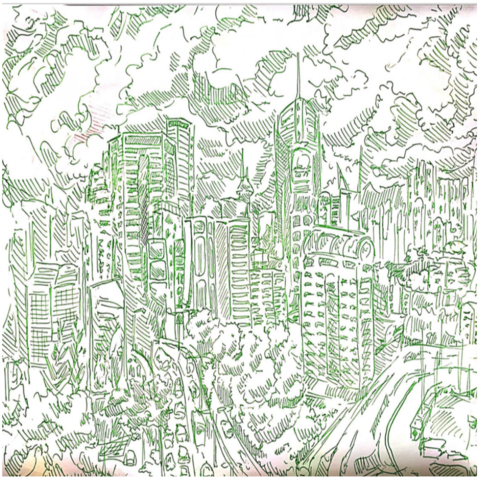

By Bruce Changlong Xu
今天我想分享一下我们公司特别珍重的价值观，就是真诚和稳当。虽然我们的世界和社会日新 月异，我们一定要信守诺言，毕竟一诺千金。自知自明，如人饮水、冷暖自知。我喜欢数学， 物理和科学的原因就是从这些课程学到的概念古今中外不会改变，而学了以后、会改变自己的 世界透视，一生不会忘记。虽然这些科目不容易，这种纯正想了解世界以及提高自己能力的志 向我非常喜欢。做生意时，常常会遇到失败，但只有通过失败才能够学到新知识，想办法去把 自己的制品改进，让顾客更开心。
Today I would like to touch upon a topic that drives the way humans interact, businesses operate, and generational trends arise and fall – namely the issue of constancy and continuity. In Avengers Endgame, Thor (Chris Hemsworth) aptly claims that “The only permanence is impermanence”. In a world that changes in the blink of an eye, our constants are often frighteningly undefined, we change more than we would like to admit, and for every inkling of knowledge that we master there are infinitely many concepts that we do not understand – our competence is a small island embedded within a vast sea of incompetence. Despite this sobering fact, having a sense of continuity and constancy is vital to our survival.
投资管理的公司主要依靠人与人之间的关系去增长收益，因此在这种行业中一定要知 道怎样赢得他人的信任、把握人事管理。在金融业中，信赖就是黄金。如果某一个公 司能够日复一日地帮助客户、这个公司将来就会有更多客户、更多机会去证明自己的 可靠性 --- 是一个正加固的循环。虽然如此，没有任何一个公司或者系统是完美的，所 以我们要保持一种灵活、适应性强的态度。
The way investment management and boutique firms operate is through client interactions, being able to maintain strong relationships with your clients is crucial to keep the deals flowing in and out of the firm. Being reliable and able to deliver on your promises is a musthave in this industry, being unreliable is a recipe for disaster. Caution must be exercised when you say one thing and do another, as this will slowly lead to a decline in trust and the previous deposit of relationship “currency”.
一个可靠的人在哪儿都能够生存的，而是我自己生活中最注重的性格特点。只有通过 尊重自己和其他人的时间才能够稳定地往前走。很多人会因为追求名望、财富忘记自 己的核心价值。快乐就是知道你尽力而为地把自己的事情做好。无论今天挂台风而明 天打雷雨、太阳后天仍然会从黑云中闪耀。大部分的公司和社会流行会消失、但自己 的知识经验是持久的。好人、有本事、可靠的人在哪儿都会快乐、都会取得自己定义 的成功。话说 Jamie Dimon 被 Sandy Weill 遣散的原因就是 年轻的 Dimon 那时候太雄 心，而 Weill 不想让他成为 CEO。但其实 Dimon 这样的的人潜力无限，一到 JPMorgan Chase 之后就立刻又开始表示自己的权限。
Being reliable is a personality trait that anyone should be proud of, and I hope a trait that I am able to demonstrate in my own life. Maintaining that sense of constancy is the only way an individual can develop any semblance of continuity, and the latter gives the former purpose. Thunderstorms happen, and clouds will come and go, but the sun and stars never stop shining in the day and night. Organizations disassemble and movements collapse, but great people will continue to do great things. Prestige means nothing, prestige is simply a byproduct of great professionals carrying out their commitments and should never be the focus.
为东南亚洲带来世界一流的教育机会可不容易，而可能需要一代一代耐心的进展。就 像我在心目中能够看到数学各种不同领域中的链接，我对中国、美国和香港多样人口 和移民，忠诚、自豪以及相信我们能够一起创造一个更好的未来。我们公司里面的人 对香港的感恩和债务实无法衡量，因此真正地想通过多样的方法去改进我们家乡的教 育基础设施。谢谢你们的兴趣知识！
Bringing a world-class higher education, research and teachers to South East Asia is not easy and requires a shift in mentality that could very well take more than a few generations. Just as I visualize and dream about the thriving connections between Ergodic Theory, Number Theory and Combinatorics, I see threads of continuity running through the diverse populations that coexist in societies of Hong Kong, America and China. Never before has the motto “Strength from Diversity” (West Island School) rang so true in my mind. I am optimistic for a bright future for the people of Hong Kong, if only because it is my home and a city that I owe the world to. Presque Partout Sino will be constant, will be continuous, and will be the infinitely differentiable forcing function that will catalyze South East Asia’s growth. Our next step is to release our first two courses PPCS01, PPECON01 that will be our first test towards a minimally viable data-driven educational product. Our team has expertise that ranges from Business to Computer Science to Economics and a diverse global perspective, and we hope to blend this together to create an educational experience that is unmatched by any other company in South East Asia. How hard we work to make this a reality will speak for itself.